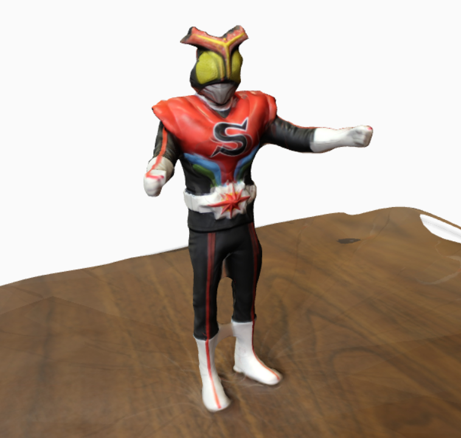

Photogrammetry
Photogrammetry is the process of making measurements and stitching together models using photographs. For the purposes of the seminar, we'll study and practice photogrammetry in order to better understand Manovich's principles of new media and, to some degree, Chun's work on memory.
In order to build a model using images, you'll need a camera and a "reference object" you want to digitize and model. Any digital camera will work, really. It does not need to be, say, a fancy DSLR. You'll then use that camera to take multiple photographs of a single object. Those photographs will then be fed into a computer vision algorithm (e.g., 123D Catch or VisualSFM), which will stitch the images together for you.
As you begin to photograph your reference object, here are a few tips:
- KNOW YOUR ALGORITHM. Before you spend too much time on a particular tool, kit, or app, see how others have used it and what guidelines exist. For my work, I use either 123D Catch or VisualSFM. 123D Catch is very user-friendly, but limits your choices and renders many of its own choices opaque. VisualSFM has a slight learning curve, runs in part via the command line, and affords more range / choice.
- Avoid reflective or transparent objects, or lightly dust them with powder.
- Also avoid reflective walls and floors.
- Avoid featureless objects.
- Avoid things that move as well as moving things (e.g., don't move your object as you're photographing it).
- Avoid direct light. Ambient light is best, and keep the lighting uniform (where possible).
- Place your object on a circular stage (or the like) that you can move around as you're photographing it.
- Strategically arrange self-occluding objects so that you can photograph as much of them as possible.
- Produce reference points (using a newspaper or post-it notes).
- Do not use a flash.
- For my camera (Canon EOS Rebel T3i), I have found that an 18mm focal length is best.
- Whatever the focal length, keep it consistent across the photographs.
- Fill your photographs with the reference object. Avoid photographing content you don't want in the model.
- Aim for sharp images wherever possible.
- Move steadily and consistently around your object.
- When photographing, use tight intervals for occlusions.
- Try taking two "loops" around your object, and photograph from at least two different angles.
- Take your detail shots last.
- For most computer vision algorithms, between 40 and 60 photographs is best, unless your object has a number of occlusions. For small objects, you might only need between 20 and 30 photographs.
When working with 123D Catch, I've found this video informative:
You might also want to check out the following:
Curious (more generally) about computer vision as a cultural formation? Then you might appreciate this video, by Timo Arnall:
Results!
Finally, here is a photo of the model we generated during today's class:
